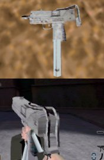
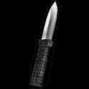
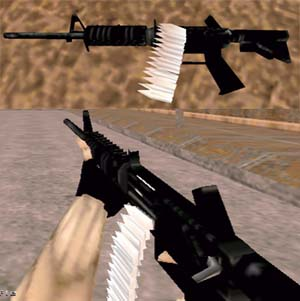
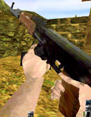

PICTURE |
AUTHOR - DATE POSTED |
 |
~MP*Canus - 09.26.1999
[CLICKTO
DOWNLOAD] Here is a mac10 originally made by
democritus (Navy Fortress) but converted to AQ2 by ~MP*Canus. |

|
Bloodlust - 06.22.1999
[CLICKTO
DOWNLOAD] Here is the glock from Terror Quake,
made for Action Quake. |
 |
TheSaint - 06.19.1999
[CLICKTO
DOWNLOAD] A new knife model from TheSaint,
featuring a new attack animation. |

|
Cloud - 04.10.1999
[CLICK
TO DOWNLOAD] Here is a Ruger Super Redhawk Magnum,
with attached sniping sight to replace the SSG Sniper Rifle. |
 |
[-ZeUs0-] - 06.22.1999
[CLICK
TO DOWNLOAD] A working version of Muz's M-16
model. Replaces the M4. |

|
Oddjob - 03.03.1999
[CLICK
TO DOWNLOAD] Replace your M4 with a tommy gun
straight from the 20's gangster movies. |
 |
[UZI]Letum - 02.26.1999
[CLICK
TO DOWNLOAD] New models that replace the
MP5/M4/Sniper with an Uzi/AK47
/Sniper. Models adapted from the TerrorQuake
mod. |

{kind=link}
{kind=link}
{kind=link}
{kind=link}
{kind=link}
{kind=link}
{kind=link}